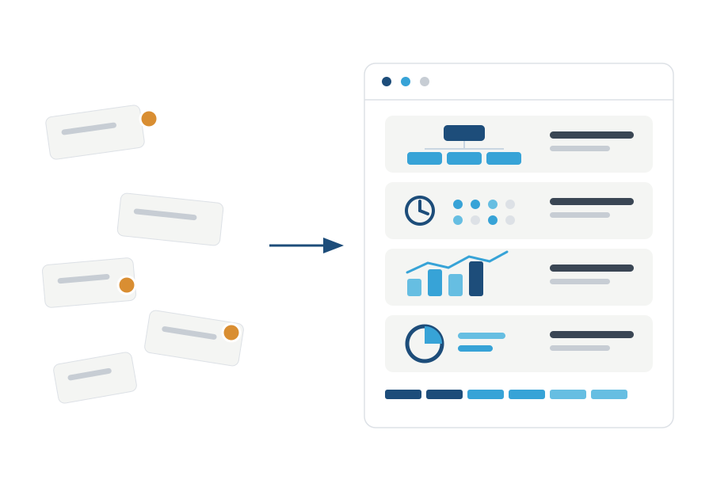

Систематизация бизнеса: из ручного управления — в систему
За 6 месяцев внедряем систему управления, с которой компания работает без ежедневного участия владельца. Не консультации «как надо», а внедрение руками вашей команды под нашим сопровождением.

Для собственников, которые упёрлись в себя
Компания 15–50 сотрудников, выручка растёт или упёрлась в потолок — а всё управление по-прежнему держится на владельце. Систематизация меняет саму конструкцию: управляет система, а не героизм собственника.
Компания управляется через систему, а не через память собственника
Смысл программы — не «внедрить красивый софт», а сделать управление повторяемым: решения → задачи → контроль → корректировка.
Было
Стало
Шесть модулей одной системы
Модули внедряются в связке — по программе изменений, составленной на диагностике. По отдельности инструменты не работают: оргсхема без ритма мертва, показатели без ответственности — просто цифры.
Организующая схема и ЦКП
Структура компании из семи отделений: каждая функция имеет владельца, ценный конечный продукт и зону ответственности. Исчезают двойные подчинения и «ничейные» задачи.
Управленческий ритм
Регулярные координации, советы и планирование. Задачи фиксируются и доводятся до результата по принципу законченной работы сотрудника (ЗРС).
Статистики и информационный центр
Каждая должность измерима: показатели и дашборды собраны в информационный центр организации. Решения принимаются на цифрах, а не на ощущениях.
Финансовый контур
Финансовое планирование и распределение ресурсов: деньги компании управляются осознанно, а не «по остатку».
Найм и регламенты
Система найма, адаптации и развития сотрудников, управленческие регламенты и письменные коммуникации — компания перестаёт зависеть от «незаменимых».
Передача управления
Подготовка управленческой команды и механизмы передачи операционного управления исполнительному директору — собственник выходит в позицию владельца.
Технология, а не работа «за клиента»
Внедряет ваша команда
Мы передаём технологию и сопровождаем на каждом шаге, но инструменты внедряют ваши руководители — поэтому система остаётся жить после проекта.
Обучение внутри программы
Владелец проходит управленческую подготовку в процессе, команда дообучается работе с инструментами. Подробнее об обучении →
Сначала логика, потом софт
Управленческие инструменты закрепляются в цифровом контуре (мы работаем с Platrum): задачи, дашборды, база знаний. Но мы не «продаём кнопку» — сначала проектируем управленческую логику, затем переносим её в платформу.
Сопровождение после
По завершении можно подключить советника по системному управлению — он поддерживает управленческий ритм на регулярной основе.
Пять стадий: от фундамента к закреплению
Структура
Роль собственника, продукт компании и ЦКП, функциональная оргструктура, зоны ответственности.
Контроль
Задачи с критерием «сделано», планирование, 10–20 ключевых метрик и финансовый контур: P&L, ДДС, план-факт.
Делегирование
Должностные папки, система найма и онбординга, база знаний — компания перестаёт зависеть от устных объяснений.
Закрепление
Регулярный ритм и координации, анализ данных, автоматизация. Собственник перестаёт быть «главным напоминателем».
Что останется в компании после программы
Не презентация «с рекомендациями», а комплект рабочих управленческих инструментов.
Отчёт диагностики и карта проблем
Зафиксированная стартовая точка: что держалось на собственнике и где терялась управляемость.
Функциональная оргструктура и матрица ответственности
Каждая функция имеет владельца, ЦКП и зону ответственности.
Регламент задач и карта управленческого ритма
Как ставятся, контролируются и закрываются задачи; календарь координаций и советов.
Список метрик и дашборд
10–20 ключевых показателей по функциям, отделам и бизнесу — в информационном центре.
Финансовый контур
P&L, ДДС, план-факт, дебиторка и обязательства — на регулярном разборе.
Должностные папки и план развития на 90 дней
Функции, инструкции, чек-листы, онбординг — и план, что компания делает после завершения программы.
Сроки и условия
Программу ведут лично партнёры ASM Strategy — Максим Юрин и Юрий Маракулин: административное сопровождение внедрения и контроль качества методологии. Мы не передаём проекты младшим консультантам. Оптимальный ритм — одна основная встреча в неделю с собственником плюс рабочие встречи с руководителями.
Частые вопросы о систематизации
С чего начинается систематизация?
С диагностики: сначала аудит системы управления и программа изменений на 6 месяцев, затем внедрение по этой программе. Так мы внедряем то, что нужно именно вашей компании, а не типовой набор.
Сколько времени это требует от собственника?
Внедрение идёт руками вашей команды при нашем сопровождении. От собственника — участие в ключевых сессиях и утверждение решений: обычно несколько часов в неделю, которые быстро окупаются снижением операционной нагрузки.
Не откатится ли система после завершения проекта?
Против отката работают два механизма: обучение (мы готовим владельца и команду пользоваться инструментами) и сопровождение (после внедрения можно подключить советника по системному управлению, который поддерживает управленческий ритм).
Будет много теории?
Нет. Продукт находится на стыке обучения, консалтинга и практического внедрения: каждая тема завершается артефактом — схемой, матрицей, регламентом, дашбордом или планом передачи функций.
Команда будет саботировать изменения?
Руководителей вовлекаем постепенно: через роли, ответственность, задачи и понятные критерии результата. Команда участвует в разработке инструментов, а не получает их «сверху».
Вы работаете с нашей отраслью?
Мы работаем с B2B-сервисными и производственными компаниями от 15 до 50 сотрудников. Технология систематизации отраслево-нейтральна: меняются процессы, но не принципы управляемости.
Начните с бесплатной диагностической встречи
90 минут онлайн: обсудим состояние управления в вашей компании и путь к системе — от диагностики до внедрения.